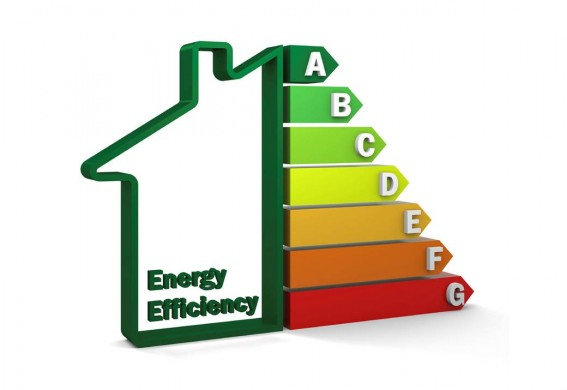
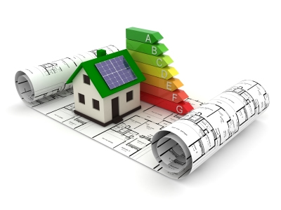

Services
Energy audit
Energy audits (audit) - is a comprehensive evaluation of the company related to the energy costs of various kinds, fuel, water and some energy, aimed at identifying opportunities to optimize the cost-effective use of energy resources. The result of the audit is to energy performance certificate. Energy audit is the starting point for energy efficiency at the facility. Based on the data from the report formed the strategy of energy saving in the short term. Previously conducted an energy audit will help to avoid mistakes in the later stages of the energy (design, installation), and as a result, to protect the customer from the extra financial costs. Energy audit is one of the requirements of state and international funding programs of energy saving measures. UKRSOCPROJECT provides energy audits on any objects and the projection and implementation of energy saving measures. For more information on conducting an energy audit, you can contact our specialists. UKRSOCPROJECT proposes to hold an energy audit of energy facilities, energy audit of thermal power, energy audit of heating, cooling systems, energy audits, energy audits boilers and boiler plants, energy audit process, an energy audit of sewage trunk sewers, treatment plants, energy audit of water supply water intake and pumping systems, energy audits of buildings, energy audits of ventilation, lighting energy audits, energy audits of compressed air.
During the energy audit, the following activities:
- analysis of the state of power supply systems, heating, water supply, parks technical equipment of industrial enterprises (the object);
- assessment of the systems and measuring instruments - instruments for energy accounting and compliance requirements;
- identifying unreasonable losses;
- assessment of the system of regulation of energy consumption and energy use;
- checking the energy balances of the enterprise (the object);
- the specific energy consumption norms for the products or activities;
- the evaluation of the major energy-saving measures implemented by the company.
Energy audit include:
- energy monitoring - Monitor set and actual parameters of energy consumption;
- measurements (measurements) - determination using special devices (measurement tools, accounting tools) settings in the control points;
- polls and surveys of participants of the production or consumption;
- study co-regulatory framework, guidelines and instructions in the enterprise;
- calculations of economic efficiency of implementation of various organizational proposals or investment in energy-saving technologies (devices);
- report containing the results of the energy audit and recommendations.
The result of the audit is to:
- finally, the quality of produced energy, particularly electricity;
- recommendations for the implementation of energy saving measures and technologies;
- recommendations for actions (including changes in technology) to improve the energy efficiency of products;
- recommendations for replacement energy consumed other types of resources (eg, electricity for heating - warm).
Engineering
To date, the design is a mandatory step before starting the installation or construction of any object. The approved project provides a comprehensive view of the results that will be obtained after the new construction or reconstruction, as well as on the cost of their implementation.
The need to design determined by the following factors:
- official project is required to obtain a building permit and the harmonization of issues;
- the expected results after implementation;
- material savings in installation and construction;
- possibility of investment planning for the implementation of the project;
- time savings.
UKRSOCPROJECT perform work on the design of objects of architecture, design of internal engineering networks, systems and structures, design of external engineering networks, systems and structures, process design, as well as work related to engineering activities. UKRSOCPROJECT has substantial experience in projects of varying complexity for the private and public sectors. You can get advice in the design department of UKRSOCPROJECT in the shortest possible time. The specialists of our design department will give you the best solution on the issue and will make a proposal to conduct those studies.